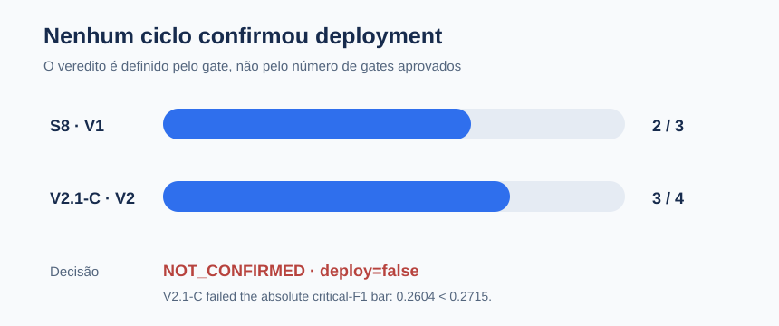
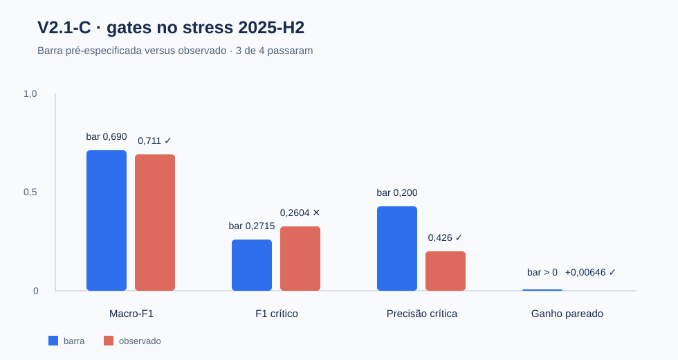

Confirmar honestamente antes de promover
Um estudo de roteamento de reclamações CFPB com classe crítica rara, partições temporais seladas e gates pré-especificados. O resultado defensável é a evidência de não confirmação — não um modelo pronto para servir.
17,1 milhões de linhas · 9 famílias modeladas · 13 pares de notebooks · duas aberturas confirmatórias
A pergunta é se o ganho sobrevive ao futuro
O projeto roteia narrativas de reclamações do CFPB para famílias históricas de produto. A classe crítica, debt_credit_management, representa apenas 5.437 narrativas em 3,8 milhões. Volume de reclamações não é prevalência de mercado nem medida de dano ao consumidor.
Resultado: S8 e V2.1-C retornaram NOT_CONFIRMED; nenhum ciclo autoriza deployment.
As janelas seladas impedem uma vitória retrospectiva
O protocolo separa desenvolvimento, validação, test, stress e monitor. Identidade de grupo impede que uma reclamação normalizada atravesse partições. A visão científica usa representantes limpos e inéditos; a visão operacional é secundária e não altera decisões.

Janelas e status
train: desenvolvimento.validation: desenvolvimento consumido pelo V2.test: consumido pelo S8.stress: consumido pelo V2.1-C.monitor: permanece selado.
O gate que falhou define a decisão
No V2.1-C, macro-F1 (0,710748), precisão crítica (0,426070) e ganho pareado (+0,006455) passaram. O F1 crítico foi 0,260404, abaixo da barra absoluta 0,2715. Por isso, 3 de 4 não significa confirmado.

Leitura correta: o ganho pareado sobre o controle é diagnóstico e positivo, mas insuficiente para superar a regra confirmatória congelada.
A lógica está em src/; notebooks orquestram
O projeto mantém contratos, runners, relatórios e manifestos separados da narrativa. Os pares PT-BR/EN-US compartilham a mesma lógica auditada; a edição PT-BR é a referência editorial.
Camadas compartilhadas
data.py,audit.py,taxonomy.pyededuplication.py.temporal_split.pypara grupos e partições.- Runners S3–S8, V2 e pacote congelado.
- Contratos
Predictor,PredictionBatcheArtifactManifest.
Governança técnica
- Resultados agregados; narrativas e scores individuais não são persistidos.
- Manifests carregam hashes de protocolos, artefatos e resultados.
- Gates de reprodução exata protegem o objeto medido.
- MLflow é opcional e fica na orquestração.
Uso permitido e limites
Pode sustentar
- Auditoria de protocolos e avaliação confirmatória.
- Aprendizado sobre drift temporal e classe rara.
- Desenho de um novo estudo em partições ainda não consumidas.
Não pode sustentar
- Servir qualquer modelo como sistema confirmado.
- Reabrir os veredictos S8 ou V2.1-C.
- Abrir a partição
monitor2026 neste ciclo.
Fronteira decisória: deployment_authorized=false. O modelo é um artefato de estudo e auditoria, não uma recomendação operacional.
Fontes e reprodução
O relatório é uma camada de comunicação. Protocolos congelados, código modular, testes e manifests versionados permanecem como fonte técnica.